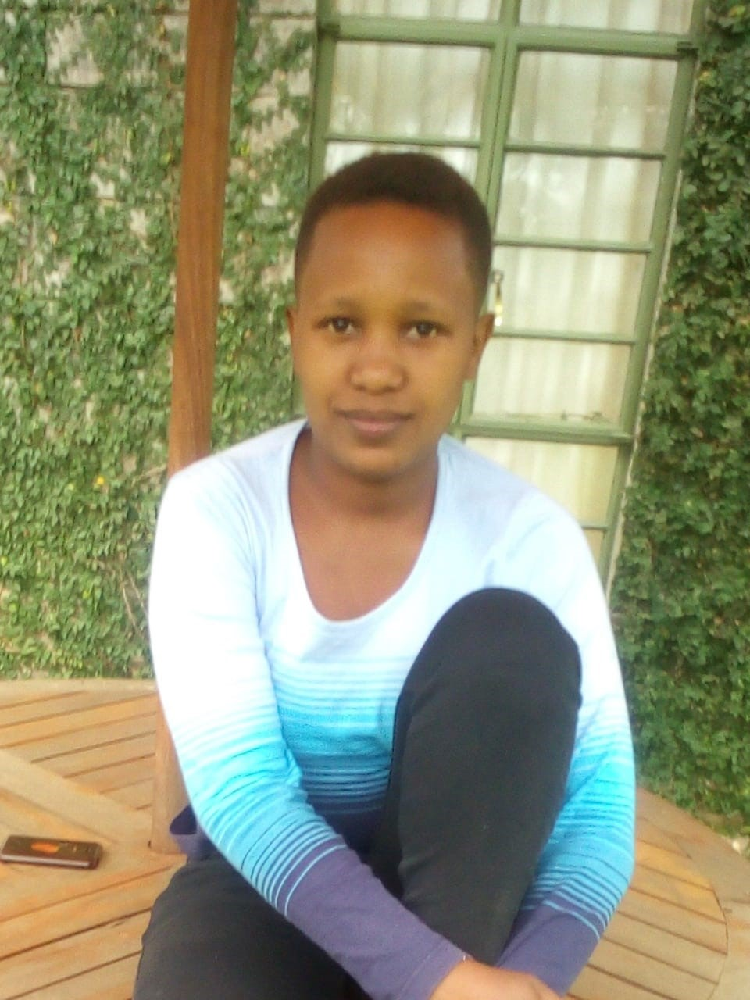

Terry Nyakio
Founder and Director

Grace Katoto
Trust Care Hospital is a non-profit organization that is leading in medical expertise and service provision, with deservedly earned recognition throughout East Africa and beyond as an advanced diagnostic, treatment and referral centre. Investment in the latest technology and medical equipment has seen us establish leadership in medical procedures both in Kenya and beyond. We take pride in our highly qualified professionals who deliver our mission every day, translating their knowledge and expertise to internationally compliant practices in healthcare provision. Courtesy, consideration and unreserved respect towards our patients' privacy, dignity and confidentiality have helped us earn their trust and goodwill time and again. Our dedicated nursing staff provides professional care within a friendly and comfortable environment, ensuring a pleasant and anxiety-free time in hospital for our patients and their families.
To offer patients the best care using advanced technology in an atmosphere of trust, safety and comfort.
To be a world-class multi-speciality hospital , delivering exceptional quality, patient safety and outstanding experience, whilst achieving sustainable growth.
Dedication: We are dedicated to offering patients and their families efficient service and great value for their money.
Empathy: We are devoted to providing a warm, friendly and caring environment in which patients can recover.
Inspiration: We are an organization that inspires our staff to achieve the extraordinary and develop the best careers.
Quality: We pursue superior performance and quality in all we do, to build and preserve the Hospital's clinical, organizational and financial strength.
Partnerships: We recognize the value of strong internal and external partnerships to accomplish our goals.